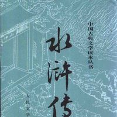
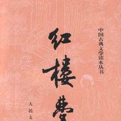
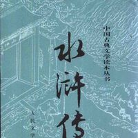
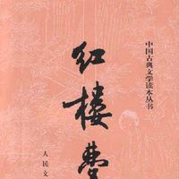

中国古典长篇小说四大名著，简称四大名著，是指《水浒传》《三国演义》《西游记》《红楼梦》（按照成书先 后顺序）这四部巨著。
四大名著是中国文学史中的经典作品，是世界宝贵的文化遗产。此四部巨著在中国文学史上的地位是难分高低的 ，都有着极高的文学水平和艺术成就，细致的刻画和所蕴含的深刻思想都为历代读者所称道，其中的故事、场景、人 物已经深深地影响了中国人的思想观念、价值取向。可谓中国文学史上的四座伟大丰碑。
 



—作者： 罗贯中（约1330年—约1400年），名本、才本，字贯中，号湖海散人。元末明初作家，戏曲家。
—介绍： 《三国演义》是综合民间传说和戏曲、话本，结合陈寿的《三国志》、范晔《后汉书》、元代《三国志平话》、 和裴松之注的史料，以及作者个人对社会人生的体悟写成。
—作者： 吴承恩（1501年-1582年），字汝忠，号射阳山人。中国明代杰出的小说家。
—介绍： 西游记以民间传说的唐僧取经的故事和有关话本及杂剧（元末明初杨讷作）基础上创作而成。
—作者： 施耐庵（1296年—1370年），《水浒传》的作者究竟是谁具有争议，目前最广泛认可的说法认为作者是施耐庵。
—介绍： 《水浒传》的故事源起于北宋宣和年间，出现了话本《大宋宣和遗事》描述了宋江、吴加亮（吴用）、晁盖等36 人起义造反的故事，成为《水浒传》的蓝本。
—作者：
yi
—介绍： 《红楼梦》是一部章回体长篇小说。早期仅有前八十回抄本流传，八十回后部分未完成且原稿佚失。